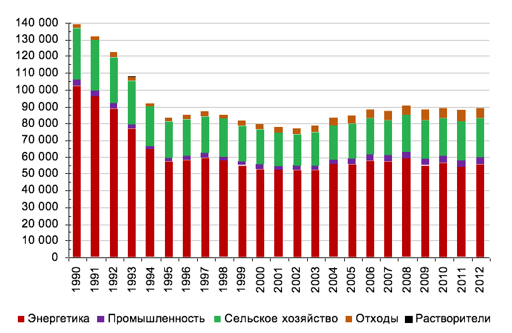

согласно параграфам 13 и 14 решения 1/СР.20 Конференции Сторон РКИК ООН
Республика Беларусь поддерживает коллективные усилия сторон Рамочной Конвенции Организации Объединенных Наций «Об изменении климата» (далее – РКИК ООН) по достижению основного ориентира текущего столетия – недопущения повышения среднемировой температуры более чем на 2 градуса Цельсия по отношению к доиндустриальному периоду. С тем, чтобы способствовать предотвращению опасного изменения климата, Республика Беларусь представляет свои предполагаемые национально-определяемые вклады в эти усилия и принимает на себя обязательство обеспечить к 2030 году сокращение выбросов парниковых газов не менее чем на 28 процентов от уровня выбросов 1990 года без учета выбросов и стоков парниковых газов в секторе «Землепользование, изменение землепользования и лесное хозяйство» и без каких-либо дополнительных условий (обязательство не предполагает использование механизмов международного углеродного рынка и привлечение иностранных финансовых ресурсов для внедрения наилучших доступных технологий).
На рисунке 1 приведена динамика выбросов парниковых газов за период 1990-2012 годы и прогноз до 2030 года, который основан на сценарии, учитывающем утвержденные программы развития отраслей экономики, включая ввод в эксплуатацию в 2018 году Белорусской атомной станции, а также дополнительные политику и меры по сокращению углеродоемкости. Согласно прогнозу, после 2030 года будет прослеживаться дальнейшая тенденция к увеличению выбросов парниковых газов с прохождением пика в 2035 году.
Рисунок 1 –Выбросы парниковых газов в 1990-2030 годах, Гг CO2 эквивалента
Абсолютное сокращение выбросов парниковых газов по сравнению с выбросами в базовом году.
В качестве базового года для определения количественных обязательств по сокращению выбросов парниковых газов принят 1990 год. В рамках предыдущих международных соглашений, касающихся вопросов изменения климата, данный год также принимался Республикой Беларусь за точку отчета в целях принятия обязательств по сокращению выбросов парниковых газов.
Для определения данных по выбросам парниковых газов в базовом году использовался Государственный кадастр парниковых газов за 2012 год. Данные этого кадастра вошли также в Шестое национальное сообщение, направленное в Секретариат РКИК ООН в феврале 2015 года, и прошли экспертную проверку Секретариата РКИК ООН в апреле 2015 года.
Согласно этим данным, в 1990 году выбросы парниковых газов составляли 139 151,23 тыс. тонн в эквиваленте СО2 без учета сектора «Землепользование, изменение землепользования и лесное хозяйство» (далее - «ЗИЗЛХ»).
Принимая во внимание Национальную стратегию устойчивого развития до 2030 года, целевым годом, к которому относятся данные обязательства, принимается 2030 год.
Действие всех обязательств и показателей настоящего документа, таким образом, охватывает период с 1 января 2021 года по 31 декабря 2030 года.
Учитывая освоенную в стране методологию и требования к отчетности по инвентаризации парниковых газов в рамках РКИК ООН, настоящие обязательства включают информацию о выбросах парниковых газов по следующим секторам:
Подходы относительно включения в данные обязательства сектора «ЗИЗЛХ», который представляет в Республике Беларусь нетто-стоки углерода из атмосферы, будут определены после уточнения методологических вопросов оценки выбросов и абсорбции парниковых газов в данном секторе. Не позже 2020 года Республика Беларусь вернется к вопросу о включении потенциала этого сектора в свои обязательства.
Настоящие обязательства охватывают следующие парниковые газы:
Целевые долгосрочные ориентиры, на которых основывается климатическая политика до 2020 года, определены в Директиве Президента Республики Беларусь от 14.06.2007 №3 «Экономия и бережливость – главные факторы экономической безопасности государства», Концепции энергетической безопасности Республики Беларусь (утверждена Указом Президента Республики Беларусь от 17.09.2007 №433), Стратегии развития энергетического потенциала Республики Беларусь (утверждена постановлением Совета Министров Республики Беларусь от 09.08.2010 №1180), национальных и секторальных программах модернизации и развития на период до 2020 года, перечень которых представлен в Шестом национальном сообщении (2015 год), включая Государственную программу мер по смягчению последствий изменения климата на 2013–2020 годы (утверждена постановлением Совета Министров Республики Беларусь от 21.06.2013 №510). Таким образом, в настоящее время и до конца 2020 года в Республике Беларусь действует целый ряд законодательных и иных нормативных правовых актов, имеющих обязательную юридическую силу и содержащих политику и меры с целевыми показателями сокращения энергоемкости и углеродоемкости национальной экономики.
Ориентиром на период 2021-2030 годы является Национальная стратегия устойчивого развития до 2030 года, одобренная в феврале 2015 года Президиумом Совета Министров Республики Беларусь, в которой должное внимание уделяется принципам развития, основанным на низкоуглеродной экономике.
В 2016-2019 годах будут сформированы законодательные основы новой национальной климатической политики и будут разработаны программы развития основных видов экономической деятельности на период 2021-2030 годов, включающие меры, регулирующие и стимулирующие сокращение выбросов парниковых газов.
На рисунке 2 приведены данные по динамике выбросов парниковых газов за 1990-2012 годы.

Рисунок 2 – Динамика выбросов парниковых газов в 1990-2012 годах по секторам, Гг CO2 эквивалента
За рассматриваемый временной период наибольшее количество выбросов парниковых газов наблюдалось в 1990 году – 139 151,23 тыс. тонн в эквиваленте CO2 без учета сектора «ЗИЗЛХ». В 2012 году выбросы составили 89 283,33 тыс. тонн в эквиваленте CO2 без учета сектора «ЗИЗЛХ» и сократились по отношению к 1990 году на 35,8 процента.
Такое снижение выбросов парниковых газов, в первую очередь, обусловлено резким сокращением выбросов в период 1990-1995 годы вследствие экономического кризиса в стране после распада Советского Союза, и, как следствие, снижением производства и потребления топлива.
Начиная с 1995 года, наступил период роста экономики, в течение которого к 2012 году валовой внутренний продукт на душу населения с учетом паритета покупательной способности увеличился в 4.5 раза. Выбросы парниковых газов также выросли из-за наращивания объемов производства, увеличения потребления топлива, а также из-за возрастания объемов захоронения отходов. Однако темпы увеличения выбросов по сравнению с темпами роста ВВП заметно ниже (рисунок 3). Среднегодовой прирост ВВП за период 1995-2012 годы составил 7.9 процента, а среднегодовой прирост выбросов парниковых газов за тот же период составил 0.4 процента. Углеродоемкость экономики за период 1995-2012 годы снизилась в 3.9 раза – это самый высокий в Европе темп движения к параметрам низкоуглеродного развития.

Рисунок 3 – Динамика выбросов парниковых газов и валового внутреннего продукта в 1995-2012 годах (данные за 1995 год приняты за 100 процентов)
Стране удалось значительно сократить выбросы парниковых газов в прошлом, эффективно реализуя меры с относительно низкими предельными затратами. В период 1995-2005 год на мероприятия по энергоэффективности, энергосбережению и внедрению возобновляемых источников энергии тратилось в среднем 1.6 процента от ВВП. В 2006-2010 годах эти инвестиции составляли уже 3.4 процента от ВВП, в 2011-2015 годах – 5 процентов. Доля государственных бюджетных средств в этих инвестициях составляла не менее 30 процентов. Это дало возможность, например, по такому показателю как энергоемкость ВВП быстро приблизиться к другим развитым странам с похожим климатом. Беларусь имеет один из самых низких значений углеродоемкости энергетической системы в Европе – около 0.3 тонны в эквиваленте СО2 на производство одного МВт-ч тепловой и электрической энергии, приблизившись по показателю эффективности использования установленной мощности к таким странам как Япония и США.
Учитывая решение 24/CP.19 для представления настоящих обязательств, информация по выбросам парниковых газов основана на использовании следующих методических руководств:
Для прогнозирования выбросов парниковых газов использовались следующие модели и методики:
Республика Беларусь является страной Приложения I к РКИК ООН и, соответственно, вместе с другими странами, входящими в это Приложение, должна нести основное бремя обязательств. Республика Беларусь не располагает дополнительными финансовыми ресурсами для ускоренного освоения наилучшей международной практики и внедрения наилучших доступных технологий. В условиях существующих высоких предельных затрат и темпах роста экономики способность страны мобилизовать капитал и обеспечить дополнительные инвестиции в низкоуглеродные технологии ограничена.
В течение всего первого периода обязательств в рамках Киотского протокола Республика Беларусь не имела возможность привлекать углеродное финансирование ввиду отсутствия установленного количества выбросов парниковых газов (поправка к Приложению В, принятая Сторонами в решении 10/CMP.2, не была ратифицирована), а перспективы использовать инструменты международного углеродного рынка в 2013-2020 годах минимальны в условиях действия пункта 3.7-тер Дохийской поправки, принятой Сторонами в решении 1/CMP.8.
Однако Республика Беларусь и далее намерена снижать углеродоемкость свой экономики. Страна признает тот факт, что во многих секторах экономики остается большой потенциал предотвращения изменений климата. По сравнению со сценариями, основанными на существующих программах развития, которые приводят к сокращению выбросов на 20-22% в 2030 году по сравнению с базовым годом, по некоторым оценкам за период с 2015 по 2030 годы можно добиться дополнительного сокращения выбросов парниковых газов примерно на 25-30 миллионов тонн в эквиваленте CO2, и Республика Беларусь включает эту возможность в свои обязательства.
Данные обязательства опираются только на внутренний потенциал страны и принимаются без каких-либо дополнительных условий по возможному привлечению иностранных финансовых ресурсов для внедрения наилучших доступных технологий. Несмотря на успехи экономического развития и становления рыночной экономики, ВВП по паритету покупательной способности на душу населения остается одним из самых низких среди стран Приложения I к РКИК ООН, а удельный вес инвестиций в основной капитал недостаточен для обеспечения расширенного производства.
В данных условиях заявленные Республикой Беларусь национально- определяемые вклады в предотвращение климатических изменений являются справедливыми и амбициозными.
Благодаря планомерным действиям по устойчивому управлению лесами, лесистость территории страны с 1990 года увеличилась на 4,3% и в настоящее время продолжает расти. В соответствии с отраслевой программой развития лесного хозяйства будет продолжаться осуществление политики по повышению ресурсного потенциала лесов и обеспечению устойчивого лесопользования. В соответствии с приоритетами Национальной стратегии устойчивого развития Республики Беларусь на период до 2030 года будут реализованы меры по увеличению лесистости территории страны с 39,4% в 2013 году до 41% к 2030 году.
Республика Беларусь, в соответствии со стратегией по реализации Конвенции Организации Объединенных Наций по борьбе с опустыниванием в тех странах, которые испытывают серьезную засуху и/или опустынивание, особенно в Африке (утверждена постановлением Совета Министров Республики Беларусь от 29.04.2015 № 361), с 2015 по 2030 годы будет обеспечивать проведение экологической реабилитации не менее 10 тыс. га нарушенных болот, с увеличением площади восстановленных торфяников к 2030 году до уровня не менее 60 тыс. га и уменьшением площади деградированных осушенных земель с торфяными почвами к 2030 году до 190 тыс. га.
Республика Беларусь, в соответствии со стратегией по реализации Конвенции о водно-болотных угодьях, имеющих международное значение главным образом в качестве местообитаний водоплавающих птиц (утверждена постановлением Совета Министров Республики Беларусь от 10.02.2009 № 177), примет меры по сохранению основных местообитаний популяций редких и находящихся под угрозой исчезновения видов диких животных и дикорастущих растений, обитающих и произрастающих на водно-болотных угодьях, площадью не менее 30 тыс. га открытых низинных болот, 40 тыс. га пойменных луговых земель, 160 тыс. га верховых и переходных болот.
В соответствии с Национальной стратегией развития системы особо охраняемых природных территорий (утверждена постановлением Совета Министров Республики Беларусь от 02.07.2014 № 649), до 2030 года усилия будут направлены на дальнейшее сохранение естественных экологических систем, биологического и ландшафтного разнообразия, обеспечение экологического равновесия природных систем и устойчивого использования особо охраняемых природных территорий площадью не менее 8,8% от территории страны.
Наиболее уязвимыми к изменению климата в Республике Беларусь являются лесное и сельское хозяйство. Принимая во внимание существенное влияние изменения климата на устойчивое развитие экономики, благосостояние и здоровье населения страны, Республика Беларусь ведет формирование национальной политики в области адаптации к изменениям климата путем разработки национальных стратегий, отраслевых и региональных программ и планов по адаптации к изменению климата и их последующей реализации. В настоящее время разработана Стратегия адаптации лесного хозяйства к изменению климата до 2050 года. Ведется работа по разработке концепции Стратегии адаптации сельского хозяйства к изменению климата.
В 2016-2019 годах будут сформированы законодательные и институциональные основы в области адаптации к изменениям климата и будут разработаны механизмы сбора и передачи информации, быстрого реагирования на чрезвычайные ситуации, учета текущих и будущих рисков, связанных с изменениями климата, включения мероприятий по адаптации в отраслевые программы и программы социально-экономического развития Республики Беларусь и ее административно-территориальных единиц.
В 2017-2030 годах будут разработаны программы мер по адаптационным действиям и практикам при рекреационной и оздоровительной деятельности, территориальном развитии, планировании транспортной инфраструктуры, разработке градостроительных проектов общего, специального, детального планирования.
Республика Беларусь оказывала и будет оказывать поддержку развивающимся странам, главным образом, в сфере просвещения, образования, повышения потенциала, в области научных исследований и разработок по проблематике климатических изменений.